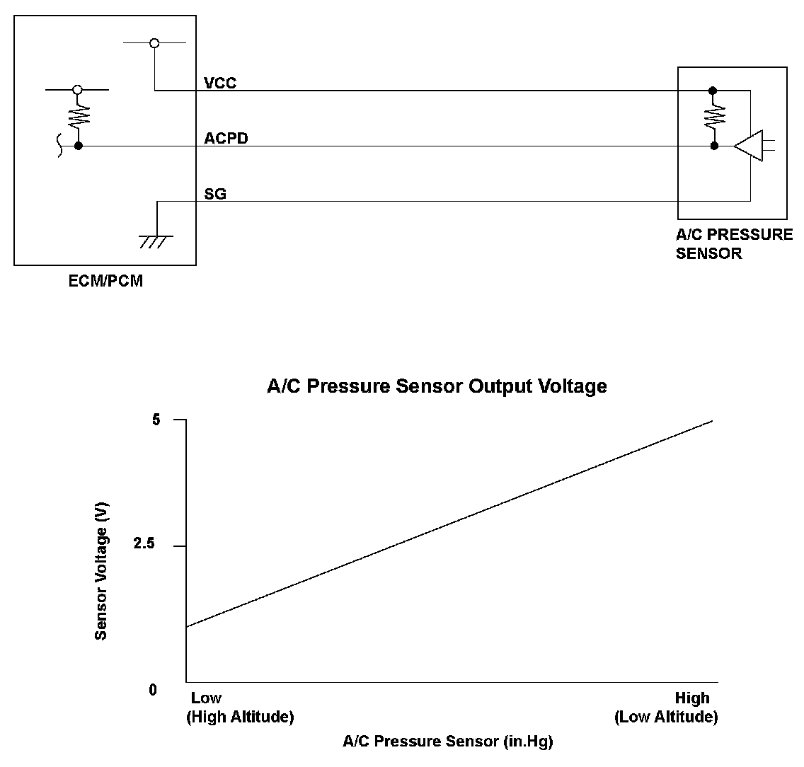
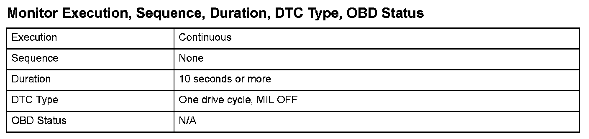
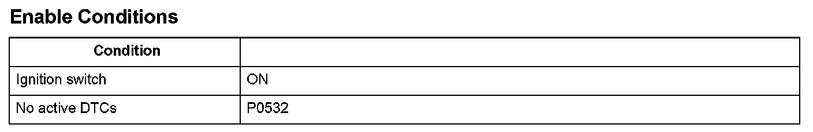

Advanced Diagnostics
DTC P0533: A/C Pressure Sensor Circuit High Voltage
General Description
The A/C pressure sensor measures the pressure change of the air conditioning refrigerant gas. The signal from the A/C pre sure sensor is low at low voltage (when the air conditioning load is low) and high at high voltage (when the air conditioning load is high). The engine control module (ECM)/powertrain control module (PCM) compares the preset voltage to the A/C pressure sensor output voltage.
When the A/C pressure sensor output voltage is higher than the preset voltage for a set time or more, a malfunction is detected and a DTC is stored.

Monitor Execution, Sequence, Duration, DTC Type, OBD Status

Enable Conditions
Malfunction Threshold
The A/C pressure sensor output voltage is 4.76 V or more for at least 10 seconds.
Diagnosis Details
Conditions for illuminating the indicator
When a malfunction is detected, the DTC and the freeze frame data are stored in the ECM/PCM memory. The MIL does not come on.
Conditions for clearing the DTC
The DTC and the freeze frame data can be cleared by using the scan tool Clear command or by disconnecting the battery.